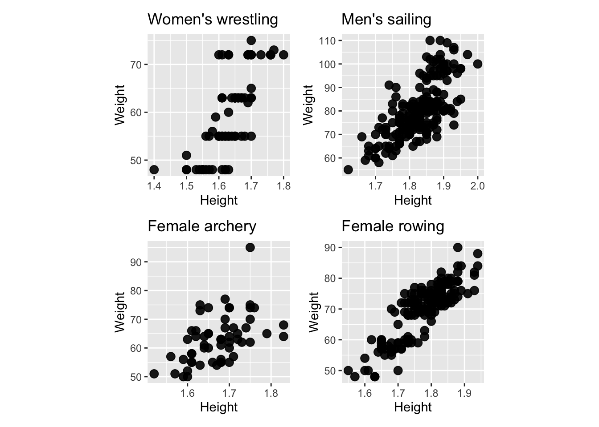
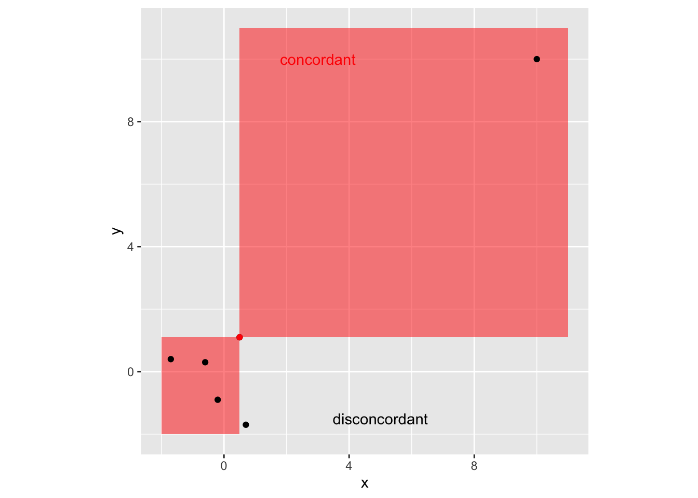

Chapter 8 Sculpting data using models
8.1 Parametric regression
Parametric means that the researcher or analyst assumes in advance that the data fits some type of distribution (e.g. the normal distribution). E.g. one may assume that \[\color{blue}{y_i} = \color{red}{\beta_0} + \color{red}{\beta_1} \color{blue}{x_i} + \color{red}{\beta_2} \color{blue}{x_i^2} + \epsilon_i,\] where \(\epsilon_i \sim N(0, \color{red}{\sigma^2})\).
- \(\color{red}{red} = \text{estimated}\)
- \(\color{blue}{blue} = \text{observed}\)
Because some type of distribution is assumed in advance, parametric fitting can lead to fitting a smooth curve that misrepresents the data.
8.2 Example
set.seed(1)
tibble(id = 1:200) %>%
mutate(x = runif(n(), -10, 10),
y = x^2 + rnorm(n(), 0, 5)) %>%
ggplot(aes(x, y)) +
geom_point() +
geom_smooth(method = "lm", se = FALSE,
formula = y ~ poly(x, 2),
size = 2, color = "red")
Still assuming a quadratic fit:
tibble(id = 1:200) %>%
mutate(x = runif(n(), -10, 10),
y = x^3 + rnorm(n(), 0, 5)) %>%
ggplot(aes(x, y)) +
geom_point() +
geom_smooth(method = "lm", se = FALSE,
formula = y ~ poly(x, 2),
size = 2, color = "red")
8.3 Simulating data from parametric models
- If a model is say: \[y = x^2 + e, \qquad e \sim N(0, 2^2)\] we can simulate say \(200\) observations from this model for \(x\in(-10,10)\) by code as shown on the right.
ggplot(df, aes(x, y)) +
geom_point()
8.4 Logistic regression
- Not all parametric models assume Normally distributed errors.
- Logistic regression models the relationship between a set of explanatory variables \((x_{i1}, ..., x_{ik})\) and a set of .monash-blue[binary outcomes] \(Y_i\) for \(i = 1, ..., r\).
- We assume that \(Y_i \sim B(n_i, p_i)\) and the model is given by
\[\text{logit}(p_i) = \text{ln}\left(\dfrac{p_i}{1 - p_i}\right) = \beta_0 + \beta_1x_{i1} + ... + \beta_k x_{ik}.\] * The function \(f(p) = \text{ln}\left(\dfrac{p}{1 - p}\right)\) is called the .monash-blue[logit] function, continuous with range \((-\infty, \infty)\), and if \(p\) is the probablity of an event, \(f(p)\) is the log of the odds.
8.5 Menarche
In 1965, the average age of 25 homogeneous groups of girls was recorded along with the number of girls who have reached menarche out of the total in each group.
ggplot(menarche, aes(Age, Menarche/Total)) +
geom_point() +
geom_smooth(method = "glm",
formula = y ~ x,
se = FALSE,
method.args = list(family = "binomial"))## Warning in eval(family$initialize): non-integer #successes in a binomial glm!
8.6 Simulating data from logistic regression
fit1 <- glm(Menarche/Total ~ Age,
family = "binomial",
data = menarche)## Warning in eval(family$initialize): non-integer #successes in a binomial glm!(beta <- coef(fit1))## (Intercept) Age
## -20.911682 1.608169- The fitted regression model is given as: \[\text{logit}(\hat{p}_i) = \hat{\beta}_0 + \hat{\beta}_1 x_{i1}.\]
- Taking the exponential of both sides and rearranging we get \[\hat{p}_i = \dfrac{1}{1 + e^{-(\hat{\beta}_0 + \hat{\beta}_1 x_{i1})}}.\]
menarche %>%
rowwise() %>% # simulating from first principles
mutate(
phat = 1/(1 + exp(-(beta[1] + beta[2] * Age))),
simMenarche = rbinom(1, Total, phat)) #<<## # A tibble: 25 x 5
## # Rowwise:
## Age Total Menarche phat simMenarche
## <dbl> <dbl> <dbl> <dbl> <int>
## 1 9.21 376 0 0.00224 2
## 2 10.2 200 0 0.0111 5
## 3 10.6 93 0 0.0199 0
## 4 10.8 120 2 0.0294 5
## 5 11.1 90 2 0.0434 8
## 6 11.3 88 5 0.0635 10
## 7 11.6 105 10 0.0920 8
## 8 11.8 111 17 0.132 14
## 9 12.1 100 16 0.185 25
## 10 12.3 93 29 0.253 18
## # … with 15 more rowsIf simulating data from a model object, simulate function usually can do this for you!
8.7 Diagnostics for logistic regression models
- One diagnostic is to compare the observed and expected proportions under the logistic regression fit.
df1 <- menarche %>%
mutate(
pexp = 1/(1 + exp(-(beta[1] + beta[2] * Age))),
pobs = Menarche / Total)ggplot(df1, aes(pobs, pexp)) +
geom_point() +
geom_abline(slope = 1, intercept = 0,
color = "red") +
labs(x = "Observed proportion",
y = "Expected proportion")
Goodness-of-fit type test is used commonly to assess the fit as well.
E.g. Hosmer–Lemeshow test, where test statistic is given as
\[H = \sum_{i = 1}^r \left(\dfrac{(O_{1i} - E_{1g})^2}{E_{1i}} + \dfrac{(O_{0i} - E_{0g})^2}{E_{0i}}\right)\] where \(O_{1i}\) \((E_{1i})\) and \(O_{0i}\) \((E_{0i})\) are observed (expected) frequencies for successful and non-successful events for group \(i\), respectively.
vcdExtra::HLtest(fit1)## Hosmer and Lemeshow Goodness-of-Fit Test
##
## Call:
## glm(formula = Menarche/Total ~ Age, family = "binomial", data = menarche)
## ChiSquare df P_value
## 0.1041887 8 0.99999978.8 Diagnostics for linear models
Assumptions for linear models
For \(i \in \{1, ..., n\}\),
\[Y_i = \beta_0 + \beta_1x_{i1} + ... + \beta_{k}x_{ik} + \epsilon_i,\] where \(\epsilon_i \sim NID(0, \sigma^2)\) or in matrix format,
\[\boldsymbol{Y} = \mathbf{X}\boldsymbol{\beta} + \boldsymbol{\epsilon}, \quad \boldsymbol{\epsilon} \sim N(\boldsymbol{0}, \sigma^2 \mathbf{I}_n)\]
- \(\boldsymbol{Y} = (Y_1, ..., Y_n)^\top\),
- \(\boldsymbol{\beta} = (\beta_0, ..., \beta_k)^\top\),
- \(\boldsymbol{\epsilon} = (\epsilon_1, ..., \epsilon_n)^\top\), and
- \(\mathbf{X} = \begin{bmatrix}\boldsymbol{1}_n & \boldsymbol{x}_1 & ... & \boldsymbol{x}_k \end{bmatrix}\), where \(\boldsymbol{x}_j =(x_{1j}, ..., x_{nj})^\top\) for \(j \in \{1, ..., k\}\)
For \(i \in \{1, ..., n\}\),
\[Y_i = \beta_0 + \beta_1x_{i1} + ... + \beta_{k}x_{ik} + \epsilon_i,\] where \(\color{red}{\epsilon_i \sim NID(0, \sigma^2)}\) or in matrix format,
\[\boldsymbol{Y} = \mathbf{X}\boldsymbol{\beta} + \boldsymbol{\epsilon}, \quad \color{red}{\boldsymbol{\epsilon} \sim N(\boldsymbol{0}, \sigma^2 \mathbf{I}_n)}\]
- \(\boldsymbol{Y} = (Y_1, ..., Y_n)^\top\),
- \(\boldsymbol{\beta} = (\beta_0, ..., \beta_k)^\top\),
- \(\boldsymbol{\epsilon} = (\epsilon_1, ..., \epsilon_n)^\top\), and
- \(\mathbf{X} = \begin{bmatrix}\boldsymbol{1}_n & \boldsymbol{x}_1 & ... & \boldsymbol{x}_k \end{bmatrix}\), where
- \(\boldsymbol{x}_j =(x_{1j}, ..., x_{nj})^\top\) for \(j \in \{1, ..., k\}\)
This means that we assume
- \(E(\epsilon_i) = 0\) for \(i \in \{1, ..., n\}.\)
- \(\epsilon_1, ..., \epsilon_n\) are independent.
- \(Var(\epsilon_i) = \sigma^2\) for \(i \in \{1, ..., n\}\) (i.e. homogeneity).
- \(\epsilon_1, ..., \epsilon_n\) are normally distributed.
So how do we check it?
Plot \(Y_i\) vs \(x_i\) to see if there is \(\approx\) a linear relationship between \(Y\) and \(x\).
##
## ── Column specification ──────────────────────────────────────────────────────
## cols(
## Species = col_character(),
## SWS = col_double(),
## PS = col_double(),
## TS = col_double(),
## BodyWt = col_double(),
## BrainWt = col_double(),
## Life = col_double(),
## GP = col_double(),
## P = col_double(),
## SE = col_double(),
## D = col_double()
## )## `geom_smooth()` using formula 'y ~ x'
A boxplot of the residuals \(R_i\) to check for symmetry.

To check the homoscedasticity assumption, plot \(R_i\) vs \(x_i\). There should be no obvious patterns.
 A normal Q-Q plot, i.e. a plot of the ordered residuals vs \(\Phi^{-1}(\frac{i}{n+1})\).
A normal Q-Q plot, i.e. a plot of the ordered residuals vs \(\Phi^{-1}(\frac{i}{n+1})\).

8.9 Assessing (A1) \(E(\epsilon_i) = 0\) for \(i=1,\ldots,n\)
- It is a property of the least squares method that \[\sum_{i=1}^n R_i = 0,\quad \text{so}\quad \bar R_i = 0\] for \(R_i = Y_i - \hat{Y}_i\), hence (A1) will always appear valid “overall.”
- Trend in residual versus fitted values or covariate can indicate “local” failure of (A1).
- What do you conclude from the following plots?

8.10 Assessing (A2)-(A3)
(A2) \(\epsilon_1, \ldots ,\epsilon_n\) are independent
- If (A2) is correct, then residuals should appear randomly scattered about zero if plotted against fitted values or covariate.
- Long sequences of positive residuals followed by sequences of negative residuals in \(R_i\) vs \(x_i\) plot suggests that the error terms are not independent.
(A3) \(Var(\epsilon_i) = \sigma^2\) for \(i=1,\ldots,n\)
- If (A3) holds then the spread of the residuals should be roughly the same across the fitted values or covariate.
Q-Q Plots
- The function
qqnorm(x)produces a Q-Q plot of the ordered vectorxagainst the quantiles of the normal distribution. - The \(n\) chosen normal quantiles \(\Phi^{-1}(\frac{i}{n+1})\) are easy to calculate but more sophisticated ways exist:
- \(\frac{i}{n+1} \mapsto \frac{i-3/8}{n+1/4}\), default in
qqnorm. - \(\frac{i}{n+1} \mapsto \frac{i-1/3}{n+1/3}\), recommended by Hyndman and Fan (1996).
- \(\frac{i}{n+1} \mapsto \frac{i-3/8}{n+1/4}\), default in
8.10.1 In R
fit <- lm(y ~ x)By “hand”
plot(qnorm((1:n) / (n + 1)), sort(resid(fit)))By base
qqnorm(resid(fit))
qqline(resid(fit))By ggplot2
data.frame(residual = resid(fit)) %>%
ggplot(aes(sample = residual)) +
stat_qq() + stat_qq_line(color="blue")8.11 Examining the simulated data further
## `geom_smooth()` using formula 'y ~ x'

 Simulation scheme
Simulation scheme
n <- 100
x <- seq(0, 1, length.out = n)
y1 <- x + rnorm(n) / 3 # Linear
y2 <- 3 * (x - 0.5) ^ 2 +
c(rnorm(n / 2)/3, rnorm(n / 2)/6) # Quadratic
y3 <- -0.25 * sin(20 * x - 0.2) +
x + rnorm(n) / 3 # Non-linear
M1 <- lm(y1 ~ x); M2 <- lm(y2 ~ x); M3 <- lm(y3 ~ x)8.12 Revisiting outliers
- We defined outliers in week 4 as “observations that are significantly different from the majority” when studying univariate variables.
- There is actually no hard and fast definition.
We can also define an outlier as a data point that emanates from a different model than do the rest of the data.
- Notice that this makes this definition dependent on the model in question.
8.13 Pop Quiz
Would you consider the yellow points below as outliers?

8.14 Outlying values
- As with simple linear regression the fitted model should not be used to predict \(Y\) values for \(\boldsymbol{x}\) combinations that are well away from the set of observed \(\boldsymbol{x}_i\) values.
- This is not always easy to detect!
tibble(id = 1:20) %>%
mutate(x1 = runif(n()),
x2 = 1 - 4 * x1 + x1^2 + rnorm(n(), 0, 0.1)) %>%
add_row(x1 = 0.6, x2 = 0.6) %>%
ggplot(aes(x1, x2)) +
geom_point(size = 4) +
annotate("text", x = 0.55, y = 0.55, label = "P",
size = 10)
Here, a point labelled P has \(x_1\) and \(x_2\) coordinates well within their respective ranges but P is not close to the observed sample values in 2-dimensional space.
In higher dimensions this type of behaviour is even harder to detect but we need to be on guard against extrapolating to extreme values.
8.15 Leverage
- The matrix \(\mathbf{H} = \mathbf{X}(\mathbf{X}^\top\mathbf{X})^{-1}\mathbf{X}^\top\) is referred to as the .monash-blue[hat matrix].
- The \(i\)-th diagonal element of \(\mathbf{H}\), \(h_{ii}\), is called the .monash-blue[leverage] of the \(i\)-th observation.
- Leverages are always between zero and one, \[0 \leq h_{ii} \leq 1.\]
- Notice that leverages are not dependent on the response!
- Points with high leverage can exert a lot of influence on the parameter estimates
8.16 Studentized residuals
In order to obtain residuals with equal variance, many texts recommend using the .monash-blue[studentised residuals] \[R_i^* = \dfrac{R_i} {\hat{\sigma} \sqrt{1 - h_{ii}}}\] for diagnostic checks.
8.17 Cook’s distance
- Cook’s distance, \(D\), is another measure of influence: \[\begin{eqnarray*} D_i &=& \dfrac{(\hat{\boldsymbol{\beta}}- \hat{\boldsymbol{\beta}}_{[-i]})^\top Var(\hat{\boldsymbol{\beta}})^{-1}(\hat{\boldsymbol{\beta}}- \hat{\boldsymbol{\beta}}_{[-i]})}{p}\\ &=&\frac{R_i^2 h_{ii}}{(1-h_{ii})^2p\hat\sigma^2}, \end{eqnarray*}\] where \(p\) is the number of elements in \(\boldsymbol{\beta}\), \(\hat{\boldsymbol{\beta}}_{[-i]}\) and \(\hat Y_{j[-i]}\) are least squares estimates and the fitted value obtained by fitting the model ignoring the \(i\)-th data point \((\boldsymbol{x}_i,Y_i)\), respectively.
8.19 Extracting values from models in R
- The leverage value, studentised residual and Cook’s distance can be easily extracted from a model object using
broom::augment..hatis the leverage value.std.residis the studentised residual.cooksdis the Cook’s distance
fit <- lm(sales ~ youtube * facebook, data = marketing)
broom::augment(fit)## # A tibble: 200 x 9
## sales youtube facebook .fitted .resid .hat .sigma .cooksd .std.resid
## <dbl> <dbl> <dbl> <dbl> <dbl> <dbl> <dbl> <dbl> <dbl>
## 1 26.5 276. 45.4 26.0 0.496 0.0174 1.13 0.000864 0.442
## 2 12.5 53.4 47.2 12.8 -0.281 0.0264 1.13 0.000431 -0.252
## 3 11.2 20.6 55.1 11.1 0.0465 0.0543 1.14 0.0000256 0.0423
## 4 22.2 182. 49.6 21.2 1.04 0.0124 1.13 0.00268 0.923
## 5 15.5 217. 13.0 15.2 0.316 0.0104 1.13 0.000207 0.280
## 6 8.64 10.4 58.7 10.5 -1.91 0.0709 1.13 0.0583 -1.75
## 7 14.2 69 39.4 13.0 1.15 0.0149 1.13 0.00395 1.02
## 8 15.8 144. 23.5 14.6 1.23 0.00577 1.13 0.00173 1.09
## 9 5.76 10.3 2.52 8.39 -2.63 0.0553 1.12 0.0838 -2.39
## 10 12.7 240. 3.12 13.4 -0.727 0.0219 1.13 0.00236 -0.649
## # … with 190 more rows8.20 Non-parametric regression
8.20.1 LOESS
- LOESS (LOcal regrESSion) and LOWESS (LOcally WEighted Scatterplot Smoothing) are .monash-blue[non-parametric regression] methods (LOESS is a generalisation of LOWESS)
- LOESS fits a low order polynomial to a subset of neighbouring data and can be fitted using
loessfunction inR - a user specified “bandwidth” or “smoothing parameter” \(\color{blue}{\alpha}\) determines how much of the data is used to fit each local polynomial.
df2 <- tibble(id = 1:200) %>%
mutate(x = runif(n(), -10, 10),
y = 0.5 * x + 3 * sin(x) + rnorm(n(), 0, 2))ggplot(df2, aes(x, y)) +
geom_point() +
geom_smooth(se = FALSE, color = "red",
# note "loess" doesn't take method.args!
# looks like a BUG in ggplot2
method = stats::loess, size = 1,
method.args = list(span = 0.4)) ## `geom_smooth()` using formula 'y ~ x'
- \(\alpha \in \left(\frac{\lambda + 1}{n}, 1\right)\) (default
span=0.75) where \(\lambda\) is the degree of the local polynomial (defaultdegree=2) and \(n\) is the number of observations. - Large \(\alpha\) produce a smoother fit.
- Small \(\alpha\) overfits the data with the fitted regression capturing the random error in the data.
8.18 Social media marketing
Data collected from advertising experiment to study the impact of three advertising medias (youtube, facebook and newspaper) on sales.